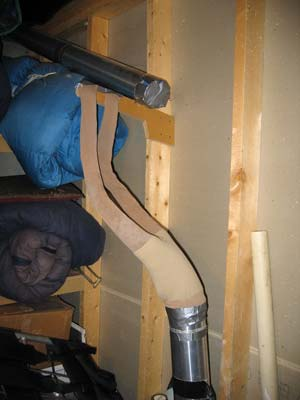

8 Easy Projects For Instant Energy Savings
With these inexpensive ideas you can reduce your carbon footprint and slash your energy bills. Spend $400 once to save $900 a year!
By Gary Reysa
February/March 2008
Reducing your home energy use is the best of win-win deals - not only does it reduce your carbon footprint, it also saves you big bucks on your energy bills. That’s especially exciting when you consider that many home energy improvements are fast, easy and inexpensive. Often, the savings from an individual project are small, but when you start putting them together they add up quickly.
My family set a goal of cutting our total energy use, energy costs and greenhouse gas emissions in half, and we were able to meet that goal with the help of these simple home projects. We found these reductions in our energy use easy to accomplish without making any significant lifestyle changes.
Here are the details: We cut our total energy use from 93,000 kilowatt hours (kWh) per year to 38,000 kWh per year. This is saving us $4,500 per year in energy costs, and has reduced our carbon dioxide (CO2) emissions by 17 tons! Our rate of return on the money we invested in this program is more than 50 percent - tax free.
Altogether, we took on 22 different projects, including two solar heating efforts that have already appeared in Mother Earth News. (See Build a Simple Solar Heater, December 2006/January 2007, and Solar Heating Plan for Any Home, December 2007/January 2008.) You can find details about all the projects we’ve done at our home in Montana on my Web site. But those I’ll explain in the following pages are the fast, simple ones. These eight easy home improvement projects cost us about $400 and will save us at least $9,000 over the next 10 year
| The Top Eight Projects | Initial Cost | Savings per Year | Energy Reduction per Year | CO2 Reduction per Year |
| Personal Computer Power Management | $20 | $178 | 1,780 kWh | 3,560 lbs |
| Install Compact Fluorescent Light Bulbs | $50 | $117 | 1,170 kWh | 2,340 lbs |
| Seal and Insulate Heating Ducts | $20 | $75 | 940 kWh | 480 lbs |
| Reduce Infiltration Losses From House (Seal Leaks) | $50 | $156 | 1,980 kWh | 1,010 lbs |
| Vent Dryer to Inside During Winter | $5 | $63 | 630 kWh | 286 lbs |
| Insulate Windows With Bubble Wrap | $38 | $75 | 960 kWh | 490 lbs |
| Eliminate Phantom Electrical Loads | $70 | $57 | 570 kWh | 1,140 lbs |
| Use an Electric Mattress Pad | $125 | $186 | 2,320 kWh | 1,150 lbs |
| Totals | $378 | $907 | 10,350 kWh | 10,456 lbs |
Prioritizing the Projects
When you start looking at any group of energy saving projects, you’ll likely find a huge difference in the bang for the buck. In our case, it was the simple things - such as controlling the amount of power that our computers use or basic insulating projects - that had especially good paybacks. On the other end of the spectrum, the solar photovoltaic project we intend to do in the future will cost as much as all 22 of our other projects put together, yet will only account for 2.5 percent of the total energy reduction!
Why was the total payback on our projects so good? The keys to our success were:
- We did quite a bit of homework before we got started. We evaluated each project for what it would cost and what it would save, and threw out the ones that wouldn’t pay well.
- Some projects cost almost nothing, but have big savings - you can see on the chart above that several paid for themselves many times over within the first year. These tend to bring up the average return of the overall effort.
- We are do-it-yourselfers - this can make a huge difference in the costs involved in some projects.
- Another bonus is that some of our energy improvements qualified for rebates or tax credits that further increased the money we saved.
Electricity and Greenhouse Gas
There’s another reason to do these projects. Cutting down on electricity use is very effective in reducing greenhouse gas emissions. Unfortunately, in the United States, most of our electricity comes from inefficient coal plants. Coal is a high carbon fuel, and compared to other energy sources, coal-fired plants produce a lot of carbon dioxide relative to the amount of energy they produce.
If we’re concerned about climate change, we should be shutting down coal plants. Instead we are on course to build more of them - many more. To me, this argues for doing an especially aggressive job of trimming your electricity use. If you want to reduce your contribution to greenhouse gases, most people will be able to find many hundreds of kilowatt hours that can be saved easily and cheaply with minimal lifestyle change. We get our electricity from a coal-fired plant, so all the projects we did significantly reduced the amount of greenhouse gas we produce. Notice that the projects that save electricity reduce greenhouse gases by about 2 pounds of carbon dioxide per 1 kWh of energy saved. For example, putting our two home computers on a power diet saved nearly 1,800 kWh per year and 3,500 pounds of greenhouse gas!
1. Personal Computer Power Management
Computers and all their related equipment, such as printers and wireless routers, consume a lot of power. Together, our two computers and related equipment used 270 watts whenever they were switched on, but we found there was an easy way to reduce this amount. We put all the computer junk on a power strip, so that at night we could turn off everything with one flip of the power strip switch. We also started using the energy saving settings on our computers. During the day, we have the computers set to hibernate if they are inactive for 15 minutes so that the computer stops consuming power. This saves a total of 1,780 kWh per year, 3,560 pounds of greenhouse gas, and $178 per year! Recently, we also started using a new gadget called the Mini Power Minder that automatically powers down all our peripherals when the computer goes into hibernate. At only $15, it’s a bargain.
Energy savings/year | 1,779 kWh |
Initial cost | $20 |
DIY labor | 1 hour |
CO2 reduction | 3,557 pounds |
$s saved/year | $178 |
Energy source | Electricity |
1st year return | 890 percent |
10 year savings | $2,834 |
2. Install Compact Fluorescent Light Bulbs Throughout the House
We decided to replace all of our existing incandescent lights with compact fluorescent light bulbs (CFLs). There is a much larger variety of CFLs out there now than there were just a few years ago. You can find them for most situations, including for lights with dimmer switches and decorative bulbs. We spent about $50 on new light bulbs, after you factor in some rebates from our utility. Many utilities offer rebates on CFLs, so check to see whether yours does.
Energy savings/year | 1,168 kWh |
Initial cost | $50 |
DIY labor | 2 hours |
CO2 reduction | 2,336 pounds |
$s saved/year | $117 |
Energy source | Electricity |
1st year return | 234 percent |
10 year savings | $1,861 |
3. Seal and Insulate Heating Ducts
We sealed the exposed heating duct joints with duct mastic and insulated all the ducts that were not already insulated in the attic and the crawl space. That wasn’t many in my case, but it’s still worth doing.
The cost for sealing ducts is minimal - a can of duct mastic costs about $5. The cost for insulating ducts is also low - about 25 cents per linear foot of typical ducting. I figured it cost about $20 total, because most of my ducts were already insulated.
Unless you pay to have the ducts tested professionally before and after you insulate them, estimating the savings is a guess at best. Good sources say that duct losses are typically high - 15 percent to 30 percent on average of your heated air from the furnace is lost through cracks and openings at the duct joints. But in general, you can’t get at a lot of the ducting that runs through walls on an existing house. I focused my efforts on the ones I could get to in the attic, crawl space and basement.
I estimated the fuel savings for my house at a conservative 3 percent. However, a man I know who has sealed many duct systems and then measured them says he can get measured leakages down to 5 percent. In other words, this project made sense for my home, but it might save you much more than the figures listed below, depending on how well sealed your home already is. Just put it on your list of “must do” things. It may or may not bring you huge savings, but it’s easy and cheap to do.
Energy savings/year | 940 kWh |
Initial cost | $20 |
DIY labor | 4 hours |
CO2 reduction | 479 pounds |
$s saved/year | $75 |
Energy source | Propane |
1st year return | 375 percent |
10 year savings | $1,195 |
4. Reduce Infiltration Losses (Seal Your Home’s Air Leaks)
Most homes have many places where air leaks in and out, including around doors and windows, but especially around plumbing, wiring and light fixtures that penetrate into the attic or crawl space. We decided to caulk around all the windows, and seal wiring and plumbing penetrations from the living space to the attic. For this project, I bought a few tubes of caulking and some polyurethane foam in cans, which cost a total of about $50.
You can find the obvious air leaks yourself because you’ll feel the drafts, but you might be surprised at some of the places your home is losing heat. The best way to find these spots is through a professional inspection, including a blower door test. If your utility offers this service, you should definitely take advantage of it. Then take every opportunity during the test to identify infiltration locations, so you can fix them later.
Again, the savings for this project are hard to estimate unless you’re willing to pay for a professional test. I guessed that infiltration was cut down by 0.1 ACH (Air Change per Hour). This would amount to about 10 percent air leak reduction on a typical house having a 1.0 ACH, or 20 percent on a well built and tight new house.
I estimate this reduction would be equal to 6,100,000 Btu/year, which is equivalent to 73 gallons of propane burned in a 90 percent efficient furnace, or 1,980 kWh. Again, the cost is so low and the potential savings are so high that this project is a must-do.
Energy savings/year | 1,980 kWh |
Initial cost | $50 |
DIY labor | 8 hours |
CO2 reduction | 1,009 pounds |
$s saved/year | $156 |
Energy source | Propane |
1st year return | 312 percent |
10 year savings | $2,485 |
5. Vent Dryer Inside During Winter
We have started to route the clothes dryer heat vent to the inside of the house in the winter. We live in a very dry climate, so the added moisture is a benefit, not a problem. There are two major advantages of venting inside. First, you recover the heat that was added to dry the clothes (about 2.2 kWh per load). Second, you avoid bringing in cold outside air to make up for the air that the dryer is pushing outside. To vent to the inside, you need to have a dry climate, an electric (not gas) dryer, and a way to catch the lint in the dryer exit stream. The cost of this project was $20 for some tubing and a lint filter.
Caution: Gas dryers should never be vented inside, since toxic combustion products are in the vented air. Electric dryers should only be vented inside if your climate is dry - be alert for any moisture problems.
Energy savings/year | 630 kWh |
Initial cost | $5 to $20 |
DIY labor | 2 hours |
CO2 reduction | 286 pounds |
$s saved/year | $63 |
Energy source | Propane |
1st year return | 315 percent |
10 year savings | $1,002 |
6. Insulate Windows with Bubble Wrap
This is a neat idea that comes from the greenhouse crowd. You can insulate windows using bubble wrap packing material by spraying a water mist on the window, and then applying bubble wrap. The bubble wrap will usually stay in place for the full season with one spray. The bubble wrap distorts the view, but does allow good daylight to come through. It’s a good option for windows that you don’t need a view out of.
This is very cost effective - payback is usually less than one heating season. At the end of winter, you can just pull the bubble wrap off, roll it up and save it for next year. If you are going to use a lot of bubble wrap, it’s worth finding a dealer in packing materials to buy it from (or a greenhouse supply place). You can get bubble wrap from shipping companies such as UPS, but their prices are much higher.
My cost was 27 cents per square foot for 141 square feet, for a total of $38. This is something you can do in a couple hours, and use until you decide on a longer term solution - if ever.
Energy savings/year | 955 kWh |
Initial cost | $38 |
DIY labor | 1 hour |
CO2 reduction | 487 pounds |
$s Saved/year | $75 |
Energy source | Propane |
1st year return | 197 percent |
10 year savings | $1,195 |
7. Eliminate Phantom Electrical Loads
I suggest we lobby our representatives in Congress to have all electrical devices labeled with the amount of power they use when they are switched “off.” These phantom loads are relatively small, but they add up to considerable wasted electricity. For now, the easiest way to find out how much power your appliances and gadgets consume even when they’re “off” is with an inexpensive meter, such as the Kill-A-Watt. You plug the Kill-A-Watt into the wall, and then plug the device into the Kill-A-Watt. The meter measures power use and keeps totals for the time it’s plugged in. Other brands work similarly - WattsUp is another.
In my home, all the phantom loads added up to a total of about 80 watts of power. That’s 700 kWh per year! With power strips, you can completely turn off everything plugged into them by turning off the power strip. I used power strips to eliminate 20 of the 80 watts, and that is what I show below. The remaining 60 watts is my fancy Dish HDTV receiver that always uses 60 watts. Turning it off has no effect on its power consumption whatsoever! The only cost of this project was a couple of power strips - about $20. I spent another $50 upgrading my satellite receiver. It still consumes power when it’s off, but only about 15 watts instead of 60.
Energy savings/year | 569 kWh |
Initial cost | $70 |
DIY labor | 4 hours |
CO2 reduction | 1,137 pounds |
$s Saved/year | $57 |
Energy source | Electricity |
1st year return | 81 percent |
10 year savings | $907 |
8. Use Electric Mattress Pads
Unlike electric blankets, the power consumption for mattress pad heaters is very low (about 0.15 kWh per night). By using these electric mattress pads to heat the bed, we’re able to keep the temperature of the rest of the house much lower and still be comfortable. We have two furnaces in the house, but since putting in the electric mattress pad heaters, we have been able to turn off the furnace that heats the bedrooms. The savings in propane is considerable, and the comfort is outstanding.
Others have reported being able to do the same thing with good down comforters and the like, but we’ve tried that and it doesn’t work nearly as well for me. The mattress pad heaters vary in price, but ours was $125. The dollar savings were $186 per year.
Energy savings/year | 2,320 kWh |
Initial cost | $125 |
DIY labor | 0 hours |
CO2 reduction | 1,150 pounds |
$s Saved/year | $186 |
Energy source | Propane |
1st year return | 148 percent |
10 year savings | $2,963 |
(All calculations on 10-year savings are based on an estimated 10 percent increase per year in the cost of energy.)
The Next Eight Home Energy Projects
Ready to tackle more home improvement projects? The eight projects featured in this article are those that yield big savings the fastest, but the eight projects listed below also yield large savings over time. Here are the costs and savings that Gary Reysa found when trying them in his home. You can read more about them on his Web site.
Project | Initial | Savings | Energy | CO2 Reduction |
Add More Attic Insulation | $256 | $126 | 1,593 kWh | 812 lbs |
Add More Crawl Space Insulation | $210 | $86 | 1,094 kWh | 558 lbs |
Buy a New, Efficient Clothes Washer | $400 | $35 | 350 kWh | 700 lbs |
Buy a New, Efficient Refrigerator | $800 | $72 | 720 kWh | 1,440 lbs |
Install Storm Windows | $450 | $220 | 2,700 kWh | 1,100 lbs |
Install a Storm Door | $200 | $17 | 216 kWh | 100 lbs |
Install Thermal Shades | $1,086 | $258 | 3,159 kWh | 1,525 lbs |
Remember to Turn Off Everything! | $0 | $44 | 438 kWh | 876 lbs |
Totals | $3,402 | $858 | 10,270 kWh | 7,111 lbs |
Plan Your Own Projects
When we started our series of energy improvement projects, our goal was to cut our power usage and greenhouse gas emissions in half. We’re amazed at how easy it was and how much money we saved. But houses and living situations differ, so if you’d like to tackle your own half plan, you may need to choose a different list of projects. Here are some tips for getting started.
1. Make a full list of projects to reduce your energy use.
Build a big list of candidates to choose from. You can find the list of all the projects we did at here. These are some other helpful resources:
EERE Consumer Tips
Home Energy Saver
Energy Star
EEBA Energy Checklist
Rocky Mountain Institute
2. Don’t do projects that aren’t feasible for your residence or situation.
Some projects will be impossible for your home or situation - throw these out. You might want to put some projects that look like a big stretch on a separate list to be looked at later.
3. Evaluate each project - estimate the cost, energy savings and greenhouse gas reduction.
For each project on your list, see if you can come up with at least a rough idea of what it would cost and what kind of energy savings it would achieve. In the project descriptions for everything we did, I’ve included how we estimated the cost, energy savings and greenhouse gas reduction - these may be helpful for similar projects.
4. Make a master list of projects that you intend to do over time.
Using the results of your evaluations from Step 3, weed out the projects that don’t seem worth it. This should leave you with a good list of projects that make sense for your situation, economics and the planet.
5. Sequence the projects. Put them in the order you want to do them.
All things being equal, you might as well do the projects that save the most first. But there are other factors to consider, such as the fact that some projects may interfere with others if done too early. For example, it’s hard to seal up the electrical and plumbing penetrations from the living space into the attic if you have to wade through the 18 inches of loose fill insulation that you just added. Also, your budget may require putting off some of the pricey projects until later, or you might just be more interested in some projects than others.
6. Do them! Have fun and keep track of your progress. Be proud of the results.
Keep your utility bills so you can see what progress you are making. The bills will also be helpful if you sell the house to show its improved energy efficiency.
Here are a few other resources to keep in mind. If you are doing the insulating and weatherizing projects yourself, then Insulate and Weatherize by Bruce Harley is well worth the price. There are also some helpful how-to guides and plans mixed into these pages here and here.
Gary Reysa is an accomplished do-it-yourselfer who has tackled dozens of home energy projects, large and small. This article is adapted from material on his Web site, where you can find many more projects.
|
ISTOCKPHOTO/MIKE CLARKE One of the author’s top money and energy saving strategies is surprisingly simple. Turn more stuff off! |
ISTOCKPHOTO/PHIL EARLEY Computers use a lot of electricity, so you can save a lot of energy quickly by setting your computer to go into sleep or hibernate whenever you’re not using it. |
GARY REYSA It’s easy and inexpensive to add insulation around ductwork, and doing so can lead to big energy savings. |
|
 GARY REYSA If you have an electric (not gas) dryer, try a filter to vent the dryer indoors and take advantage of the waste heat. |
GARY REYSA New energy-efficient windows are an expensive investment, but there are simple fixes that will make your existing windows more efficient. One of the fastest and cheapest is to cover them with bubble wrap. |
GARY REYSA Most appliances use energy even when they are turned off, but by plugging multiple cords into one power strip, you can turn them all completely off with one flip of the power strip switch. |
|
ISTOCKPHOTO/ERIC DELMAR Switching from incandescent light bulbs to compact fluores cents is an easy and fast way to save electricity. |
ISTOCKPHOTO/CARLIN PHOTO Lower your home heating and cooling costs by tightening up places where air leaks out by sealing them with caulk. |
GARY REYSA If you keep your bed warm with an electric mattress pad, you can save energy by turning down the thermostat at night. |
 ISTOCKPHOTO/SKIPODONNELL The benefits of home energy improvements are not always obvious because many of these projects save only small amounts of money each day, but over time, the savings multiply quickly. To look at the true benefits of any project, calculate the money and energy savings over 10 years. |
ISTOCKPHOTO/SKIPODONNELL Some home energy improvements pay off more quickly than others. All things being equal, why not do the projects that save you the most money first? |
ISTOCKPHOTO/DUNCAN WALKER In the United States, most of our electricity comes from coal-fired power plants, a source of energy that produces a lot of greenhouse gases. Trimming your electricity use can dramatically reduce your carbon footprint. |